# We first need to import the packages that we will be using
import seaborn as sns # For plotting
import matplotlib.pyplot as plt # For showing plots
# Load in the data set
tips_data = sns.load_dataset("tips")9 Visualizing Data in Python
9.0.0.1 Tables, Histograms, Boxplots, and Slicing for Statistics
When working with a new dataset, one of the most useful things to do is to begin to visualize the data. By using tables, histograms, box plots, and other visual tools, we can get a better idea of what the data may be trying to tell us, and we can gain insights into the data that we may have not discovered otherwise.
Today, we will be going over how to perform some basic visualisations in Python, and, most importantly, we will learn how to begin exploring data from a graphical perspective.
9.0.0.2 Visualizing the Data - Tables
When you begin working with a new data set, it is often best to print out the first few rows before you begin other analysis. This will show you what kind of data is in the dataset, what data types you are working with, and will serve as a reference for the other plots that we are about to make.
# Print out the first few rows of the data
tips_data.head()| total_bill | tip | sex | smoker | day | time | size | |
|---|---|---|---|---|---|---|---|
| 0 | 16.99 | 1.01 | Female | No | Sun | Dinner | 2 |
| 1 | 10.34 | 1.66 | Male | No | Sun | Dinner | 3 |
| 2 | 21.01 | 3.50 | Male | No | Sun | Dinner | 3 |
| 3 | 23.68 | 3.31 | Male | No | Sun | Dinner | 2 |
| 4 | 24.59 | 3.61 | Female | No | Sun | Dinner | 4 |
9.0.0.3 Describing Data
Summary statistics, which include things like the mean, min, and max of the data, can be useful to get a feel for how large some of the variables are and what variables may be the most important.
# Print out the summary statistics for the quantitative variables
tips_data.describe()| total_bill | tip | size | |
|---|---|---|---|
| count | 244.000000 | 244.000000 | 244.000000 |
| mean | 19.785943 | 2.998279 | 2.569672 |
| std | 8.902412 | 1.383638 | 0.951100 |
| min | 3.070000 | 1.000000 | 1.000000 |
| 25% | 13.347500 | 2.000000 | 2.000000 |
| 50% | 17.795000 | 2.900000 | 2.000000 |
| 75% | 24.127500 | 3.562500 | 3.000000 |
| max | 50.810000 | 10.000000 | 6.000000 |
9.0.0.4 Creating a Histogram
After we have a general ‘feel’ for the data, it is often good to get a feel for the shape of the distribution of the data.
# Plot a histogram of the total bill
#kde --> whether or not to display a density plot
plot = sns.displot(tips_data["total_bill"], kde = False)
plt.title("Histogram of Total Bill")
plt.show()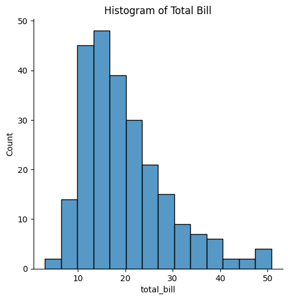
# Plot a histogram of the Tips only
sns.displot(tips_data["tip"], kde = True)
plt.title("Histogram of Total Tip")
plt.show()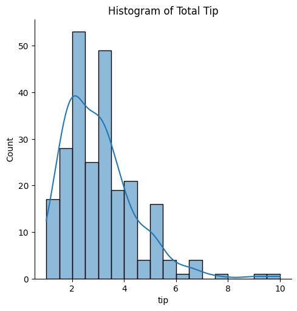
# Plot a histogram of both the total bill and the tips'
sns.histplot(tips_data["total_bill"], kde = False)
sns.histplot(tips_data["tip"], kde = False)
plt.show()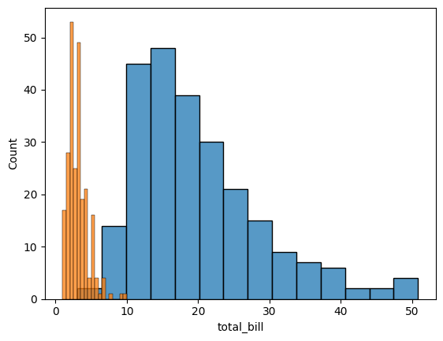
#alternative
fig, ax =plt.subplots(1,2)
sns.histplot(tips_data["total_bill"], kde = False, ax = ax[0])
sns.histplot(tips_data["tip"], kde = False, ax = ax[1])
plt.show()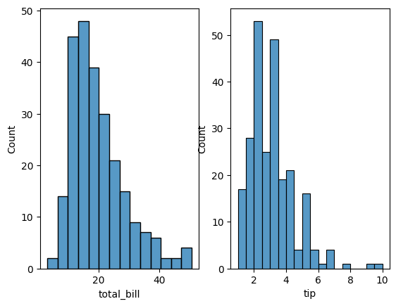
9.0.0.5 Creating a Boxplot
Boxplots do not show the shape of the distribution, but they can give us a better idea about the center and spread of the distribution as well as any potential outliers that may exist. Boxplots and Histograms often complement each other and help an analyst get more information about the data
# Create a boxplot of the total bill amounts
sns.boxplot(tips_data["total_bill"])
plt.title("Box plot of the Total Bill")
plt.show()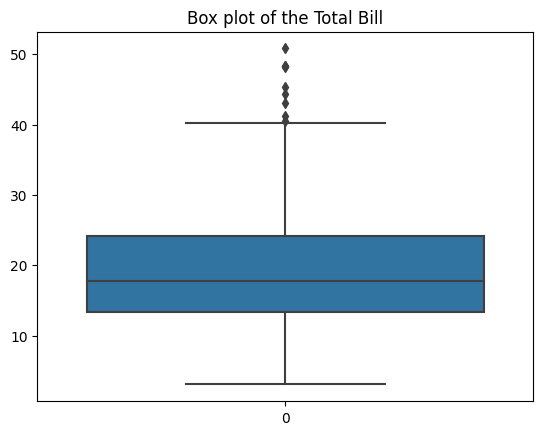
# Create a boxplot of the tips amounts
sns.boxplot(tips_data["tip"])
plt.title("Box plot of the Tip")
plt.show()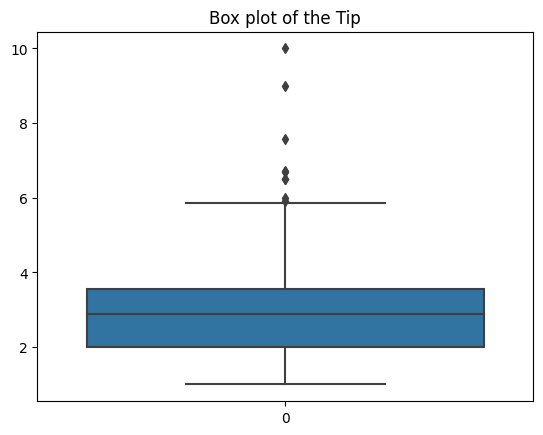
# Create a boxplot of the tips and total bill amounts - do not do it like this
sns.boxplot(tips_data["total_bill"])
plt.title("Box plot of the Total Bill and Tips")
sns.boxplot(tips_data["tip"])
plt.show()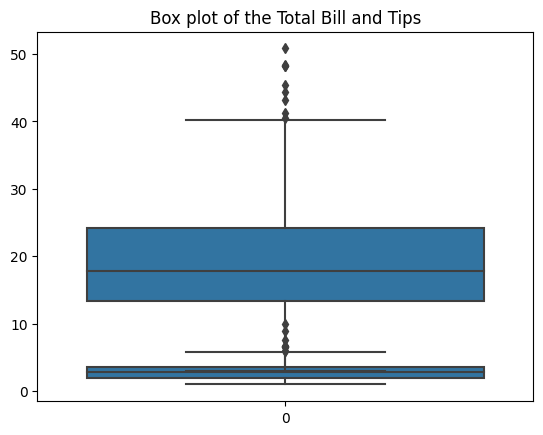
9.0.0.6 Creating Histograms and Boxplots Plotted by Groups
While looking at a single variable is interesting, it is often useful to see how a variable changes in response to another. Using graphs, we can see if there is a difference between the tipping amounts of smokers vs. non-smokers, if tipping varies according to the time of the day, or we can explore other trends in the data as well.
# Create a boxplot and histogram of the tips grouped by smoking status
# x = what I am trying to plot
# y = what I am going to be grouping by
sns.boxplot(x = tips_data["tip"], y = tips_data["smoker"])
plt.show()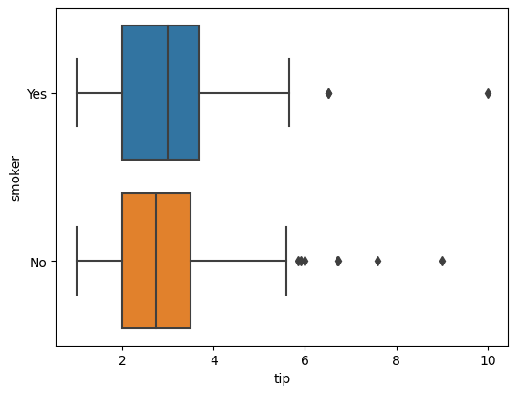
# Create histograms of the tips grouped by smoking status
#set up a facet grid by saying we want to have two similar boxes for our two smoking categories
g = sns.FacetGrid(tips_data, row = "smoker")
#the map fct allows us to take the histrogram feature of plt and map it across both smoking groups at the same time
g = g.map(plt.hist, "tip")
plt.show()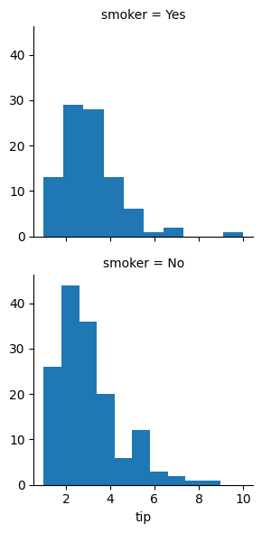
# Create a boxplot and histogram of the tips grouped by time of day
sns.boxplot(x = tips_data["tip"], y = tips_data["time"])
g = sns.FacetGrid(tips_data, row = "time")
g = g.map(plt.hist, "tip")
plt.show()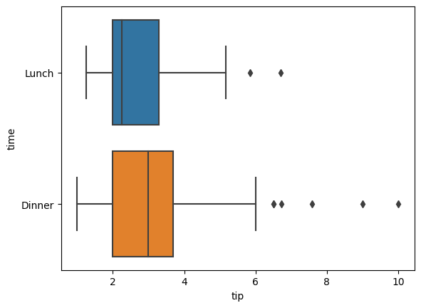
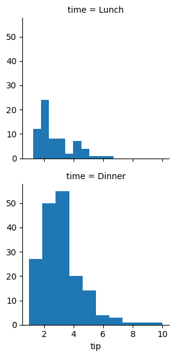
# Create a boxplot and histogram of the tips grouped by the day
sns.boxplot(x = tips_data["tip"], y = tips_data["day"])
g = sns.FacetGrid(tips_data, row = "day")
g = g.map(plt.hist, "tip")
plt.show()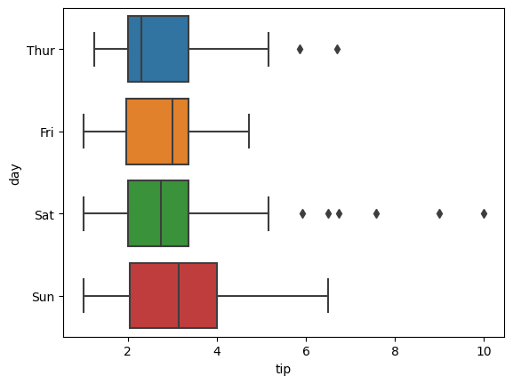
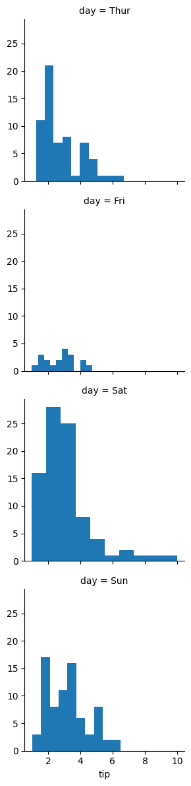